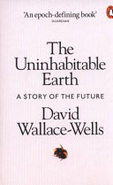

Book info using python
Table of contents.
I want to post my book reviews to this here blog, and to keep it simple, have a script pull up relevant book info. So this here is a exploration of how to to do.
sample book: The Uninhabitable Earth
First up, there are a number of ways to get book info. So trying out a few.
isbn = 9780141988870 # testing isbn number
isbnlib
This seems a reasonably popular isbn lib: https://github.com/xlcnd/isbnlib
pip install isbnlib
isbnlib grabs info from google books by default.
from isbnlib import meta, cover
print(cover(str(isbn)))
meta(str(isbn))
{'smallThumbnail': 'http://books.google.com/books/content?id=248DyAEACAAJ&printsec=frontcover&img=1&zoom=5&source=gbs_api', 'thumbnail': 'http://books.google.com/books/content?id=248DyAEACAAJ&printsec=frontcover&img=1&zoom=1&source=gbs_api'}
{'ISBN-13': '9780141988870',
'Title': 'The Uninhabitable Earth - A Story of the Future',
'Authors': ['David Wallace-Wells'],
'Publisher': '',
'Year': '2019',
'Language': 'un'}
hmmm... this is so simple that I might as well try this directly.
Google books
Trying out Google books directly
import requests
import matplotlib.pyplot as plt
from PIL import Image
from io import BytesIO
def get_book_info(isbn: int):
api = "https://www.googleapis.com/books/v1/volumes?q=isbn:"
response = requests.get(f"{api}{isbn}")
# return the first item
if response:
all_data = response.json()["items"][0]
else:
return False
return all_data["volumeInfo"]
#img_url = all_data["volumeInfo"]["imageLinks"]["thumbnail"]
data = get_book_info(isbn)
data
{'title': 'The Uninhabitable Earth',
'subtitle': 'A Story of the Future',
'authors': ['David Wallace-Wells'],
'publishedDate': '2019-09-05',
'description': '**SUNDAY TIMES AND THE NEW YORK TIMES BESTSELLER** \'An epoch-defining book\' Matt Haig \'If you read just one work of non-fiction this year, it should probably be this\' David Sexton, Evening Standard Selected as a Book of the Year 2019 by the Sunday Times, Spectator and New Statesman A Waterstones Paperback of the Year and shortlisted for the Foyles Book of the Year 2019 Longlisted for the PEN / E.O. Wilson Literary Science Writing Award It is worse, much worse, than you think. The slowness of climate change is a fairy tale, perhaps as pernicious as the one that says it isn\'t happening at all, and if your anxiety about it is dominated by fears of sea-level rise, you are barely scratching the surface of what terrors are possible, even within the lifetime of a teenager today. Over the past decades, the term "Anthropocene" has climbed into the popular imagination - a name given to the geologic era we live in now, one defined by human intervention in the life of the planet. But however sanguine you might be about the proposition that we have ravaged the natural world, which we surely have, it is another thing entirely to consider the possibility that we have only provoked it, engineering first in ignorance and then in denial a climate system that will now go to war with us for many centuries, perhaps until it destroys us. In the meantime, it will remake us, transforming every aspect of the way we live-the planet no longer nurturing a dream of abundance, but a living nightmare.',
'industryIdentifiers': [{'type': 'ISBN_10', 'identifier': '0141988878'},
{'type': 'ISBN_13', 'identifier': '9780141988870'}],
'readingModes': {'text': False, 'image': False},
'pageCount': 320,
'printType': 'BOOK',
'categories': ['Climatic changes'],
'averageRating': 4,
'ratingsCount': 23,
'maturityRating': 'NOT_MATURE',
'allowAnonLogging': False,
'contentVersion': 'preview-1.0.0',
'panelizationSummary': {'containsEpubBubbles': False,
'containsImageBubbles': False},
'imageLinks': {'smallThumbnail': 'http://books.google.com/books/content?id=248DyAEACAAJ&printsec=frontcover&img=1&zoom=5&source=gbs_api',
'thumbnail': 'http://books.google.com/books/content?id=248DyAEACAAJ&printsec=frontcover&img=1&zoom=1&source=gbs_api'},
'language': 'un',
'previewLink': 'http://books.google.com.au/books?id=248DyAEACAAJ&dq=isbn:9780141988870&hl=&cd=1&source=gbs_api',
'infoLink': 'http://books.google.com.au/books?id=248DyAEACAAJ&dq=isbn:9780141988870&hl=&source=gbs_api',
'canonicalVolumeLink': 'https://books.google.com/books/about/The_Uninhabitable_Earth.html?hl=&id=248DyAEACAAJ'}
Now to get the image cover:
def get_image(url: str, path=None):
"""downloads image and returns it
todo: save to disk if given a filepath"""
r = requests.get(url)
img = Image.open(BytesIO(r.content))
if path:
print("save to disk here")
return img
get_image(data["imageLinks"]["thumbnail"])

Goodreads
Now this is the service I actually want to use, but sadly Goodreads removed their api and shows no sign of bringing one back.
So one option is to scape goodreads. I set my prfofile visible to the world, got some url's and...
First trying out pandas to get the reviews table:
from bs4 import BeautifulSoup
from dataclasses import dataclass
import pandas as pd
@dataclass
class gr:
"stores goodreads urls"
user = "https://www.goodreads.com/user/show/819075-ko"
reviews = "https://www.goodreads.com/review/list/819075-ko?order=d&sort=review&view=reviews"
ratings = "https://www.goodreads.com/review/list/819075-ko?sort=rating&view=reviews"
df = pd.read_html(gr.reviews)[1]
df = df[df.columns[2:-1]] # drop unnecessary cols
print(df.shape)
df.iloc[0]
(30, 8)
title title Freedom at Midnight
author author Collins, Larry
rating avg rating 4.32
rating.1 KO's rating did not like it
my rating my rating 1 of 5 stars2 of 5 stars3 of 5 star...
review review Oh goody, yet another book written thr...
read date read not set
added date added May 28, 2013
Name: 0, dtype: object
Pandas doesn't do a great job with the table, so moving on to beautiful soup
r = requests.get(gr.reviews)
soup = BeautifulSoup(r.content, 'html.parser')
tables = soup.find_all("table")
df = pd.read_html(tables[1].prettify())[0]
df.head()
| Unnamed: 0 | cover | title | author | rating | rating.1 | my rating | review | read | added | Unnamed: 10 | |
|---|---|---|---|---|---|---|---|---|---|---|---|
| 0 | checkbox | cover | title Freedom at Midnight | author Collins, Larry | avg rating 4.32 | KO's rating did not like it | my rating 1 of 5 stars 2 of 5 stars 3 of 5 ... | review Oh goody, yet another book written thr... | date read not set | date added May 28, 2013 | actions view |
| 1 | checkbox | cover | title Terra Nullius: A Journey Through No One... | author Lindqvist, Sven | avg rating 4.03 | KO's rating it was amazing | my rating 1 of 5 stars 2 of 5 stars 3 of 5 ... | review A great starting point on Australia, r... | date read Aug 27, 2012 | date added Aug 23, 2012 | actions view |
| 2 | checkbox | cover | title Pakistan: A Hard Country | author Lieven, Anatol | avg rating 4.09 | KO's rating liked it | my rating 1 of 5 stars 2 of 5 stars 3 of 5 ... | review Gets some stuff right, a lot right, bu... | date read not set | date added May 01, 2011 | actions view |
| 3 | checkbox | cover | title Shameful Flight: The Last Years of the ... | author Wolpert, Stanley | avg rating 4.00 | KO's rating it was amazing | my rating 1 of 5 stars 2 of 5 stars 3 of 5 ... | review Best, most concise history of the inde... | date read Mar 02, 2010 | date added Mar 01, 2010 | actions view |
| 4 | checkbox | cover | title Tiamat's Wrath (The Expanse, #8) | author Corey, James S.A. * | avg rating 4.56 | KO's rating liked it | my rating 1 of 5 stars 2 of 5 stars 3 of 5 ... | review Eight books into the series, it's done... | date read not set | date added Mar 16, 2019 | actions view |
df.iloc[0]
Unnamed: 0 checkbox
cover cover
title title Freedom at Midnight
author author Collins, Larry
rating avg rating 4.32
rating.1 KO's rating did not like it
my rating my rating 1 of 5 stars 2 of 5 stars 3 of 5 ...
review review Oh goody, yet another book written thr...
read date read not set
added date added May 28, 2013
Unnamed: 10 actions view
Name: 0, dtype: object
When I look at the source code in the web browser I can see that the entire review is in the table, as well as links to the cover img... so to capture this I need might need a js enabled scraper.
Scrapy and Selenium
look at:
- https://github.com/OmarEinea/GoodReadsScraper
Using the beta version as the non-beta was last updated in 2018:
Conda doesn't seem to have the beta version so using pip:
pip install selenium==4.0.0.b4
To get the webdriver to run, check the version of chrome installed and install the same version of the chromedriver.
pip install "chromedriver_binary==91.0.4472.101"
If above doesn't work, try the auto binary:
pip install chromedriver-binary-auto # install the correct version
If chrome is updated, reinstall by
pip install --upgrade --force-reinstall chromedriver-binary-auto
The main table I want has the css id books and class table stacked and it lazy loads as I scroll down.
from selenium import webdriver
from selenium.webdriver.common.by import By
import chromedriver_binary # Adds chromedriver binary to path
driver = webdriver.Chrome()
driver.get("http://www.python.org")
assert "Python" in driver.title
So the basics work, now moving on to using it for goodreads
driver = webdriver.Chrome()
driver.get(gr.reviews)
driver.title
'KO’s books on Goodreads (1,135 books)'
Ok need to come back to this later...
driver.close() # shut the browser when done